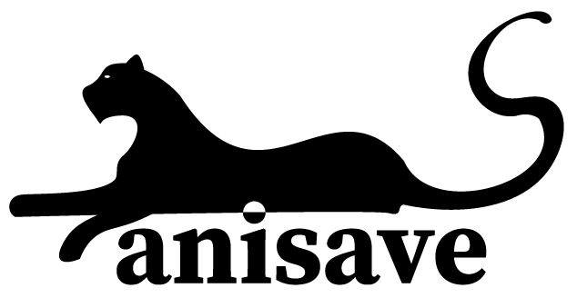

Help stop the extinction of animals. Your commitment makes a difference. You can "adopt" an animal at Anisave and give it a better chance to live a good life in nature.
You create a user account on this page. Choose an animal you want to "adopt". Pay the donation. The money goes to improve the livelihood of the animal you have adopted. Once the transaction has been completed, you will be able to follow the animal on your own page or via our app. With the help of modern satellite technology, you will have the opportunity to follow where the animal is at all times in our interactive map. You will receive updates on what the money you have donated is used for, as well as how the condition is in the habitat where the animal lives. Our volunteer corps will then take pictures of the animal and send them to you if it is possible and we do not unnecessarily disturb the animal. We have also used modern technology that can register the heartbeat of the animal you have adopted.
Earth's wildlife is disappearing at a furious pace. In a cynical world, where the animals' livelihoods are at the expense of economic profit, mass extinction of endangered species is imminent. Anisave is the animals' advocate. Together we can prevent the degradation of the natural areas where the animals live and facilitate the best possible living conditions for these animals.